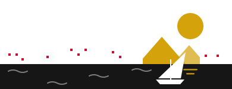

صباح الفل يا أحمد
القاهرة · حي مدينة نصر أول
غيّر
الخدمات
كل الخدماتحوالين بيتك
بالوعة مفتوحة · شارع حسن المأمون
على بعد ٢٠٠ متر · ١٢ جار قالوا أنا كمان


صوّرها، وإحنا هنحدد نوعها ونوصّلها للجهة المسؤولة ونتابعها معاك.
بلّغ دلوقتي